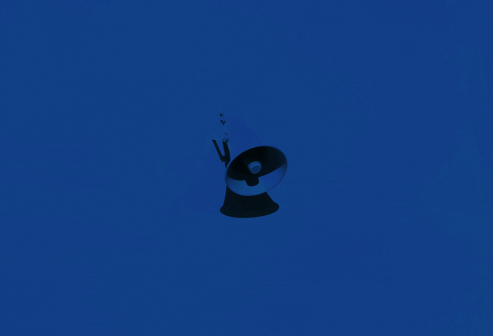
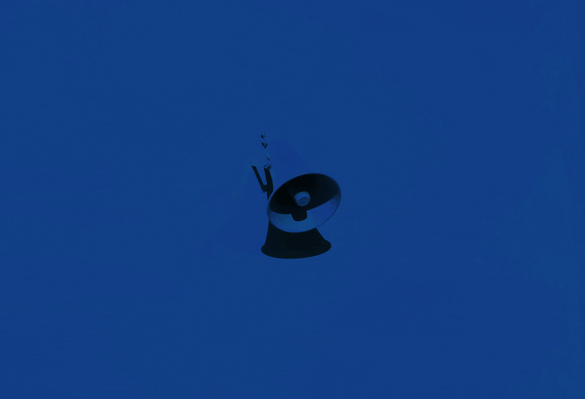

Project Goals
Redesign comprehensive music platform that aimed to improve its digital experiences to boost it’s competitive advantage and increasing music audience engaged and trusted.
The second business goal of the project: A partnership of affiliate program with UMG Hong Kong to driven more CD sales. Here are the framework of the role :
Overview and Challenge
Universal Music Group aimed to increase its digital market shares thought revamping the online experience
Nowdays, A music audience's first impression of brand is based almost exclusively on digital platform. Currently, A Universal Music Group website leaves a lot to be desired, Meanwhile, weaknesses of highly of 68% bounce rate indicative of poor user experience throughout the entire website. If audience don’t understand the website purpose and what value it brings, they will leave. Why itʼs so important to improve their online presence to be more competitive in the evolving market.
Research and Empathize
Research
After the kick-off meeting with the client to find out the most crucial issue and expectation. By Google Analytics tracking, the major problem was clearly; We realized the bouncing rate of current website is too high OVER 68%, thus, which leds to a significant drop in consumers who have moved from official website to thier e-shop (Ushop.com).
For reference only: Old website
Then, We looking through old website and content audit, Key issue at below:
After few round meetings with stakeholder, We conducted a online survey with UMG marketing team involving 28 people which learn about current website problem.
Findings
Here, I brainstorem with teamate gathered survey responses and looking through current website. We then evaluated the result into 3 overarching problem to helping us to narrow down the scope of the project, and analyzed how each of impact:
Poorly and loose content structure
42%
interviewees mentioned that they're feeling clutter on the website affect their browsing, and also mentioned that return wrong results when they are searching CD.
Key takeaway :
Unclear content hierarchy are currently the major problem. Overly artist's news on the landing page where doesn’t immediately look like a proper of music website, which affected by they decide to stay or leave. They only care if they can find the content they want. Also, sales intent due to the poor search function was affected.
Overall experience was negative
55%
they left in short time when landed on without clicking anywhere else on the website, and they expressed out-of-date design also.
Key takeaway :
The truth is, whole website was non responsive design hence they left which is resulting in frustrated users root causes of a high bounce rate majority and hurts Ushop traffic as well. Short on both unique brand personality and visuals hurts brand image and trusted.
Lack of social media presence
40%
interviewees expressed frustration about missing artist's live simply because they can't to seek out this info. They said coming here to look for artist's facebook live or activities infomation.
Key takeaway :
Existing website does not match up with what music audiences was expecting and connecting: there is only News about artist. Havent social media content that they interact with it, which would just turn off the users interest or keep browsing.
Next, we analyzed the data gathered from the user research sessions, shared the results to the client to work on the website framework revamp.

Market Research
I did an quick analysis competitors on similar music brand, the differences between various of the content and product music audience bases, as well as ways that our design could stand out from the crowd.
Defining the How?
"How might we re-design the UMG digital experience, reduce its bouncing rate issue as well as boosting engagment driven more traffic to Ushop.com (Official e-Shop) through affiliate platform?"
Ideating the Strategy
The Solution
After a lot of discussion, We determined what is major goal, and figure out what priorities of design principles. Here are synthesized the solutions after brainstorming with teamate:
Clarify on UMG content and delivery
We know that apart re-design website, maintain long-term vision equally important. A clear and intuitive content architecture is essentials in large scale brand. As primary goal, reconstruct of information architecture was needed, and also re-consider content placement and disribution of target audience what makes the most sense. Make clear what the website presented is about at first glance, as concise and clear as possible.
#1
Re-evaluate landing experience leads to conversion
Highlighting essential content and adding incentives for users to explore that leave the users with positive first-impession. This helps to reduce they drop off in which a way boost up conversions. Make it easier to explore the content thereby keep on the site longer.
Plus, Optimize search function where offer visual feedback (CD album or concert artowrk) and suggestions for queries when users entry words, which make it accurately for users what they wanted and boost purchasing intent as well.
#2
Alignment with the tone of the Music Branding
Deliver a identifiable designs which immediately gets higher chances of getting recognizable faster and interact with users also. With strong visual apperenance was needed especially music brand importantly.
#3
Reduce communication gap between brand and audiences
First issue of non-responsive website as main factor causes of high bounce rates. Responsive design across all device viewports was important, which is a fast ways to reduce bounce rate and boost up website traffic also.
Embedding a live artist's social feed wall to initiate social engagement, in which in real-time that keep the website fresh via a steady stream of social content, thereby giving a boost to website traffic and more appealing.
Create a artist's event page know what's upcoming concert or live event, and also interaged with soical calendar feature ability to keep track events they wanted.
Reconstruct the Information Architecture
As our primary goal, we focused on IA problem, I sketched out the draft which helped us quickly get a rough idea what needed to be deleted, merged or added which helps to map out how organize the content on new website. By streamlined navigatie to minimise confusion as possible during users browsing. This was essential in helping us to see the big picture of site architecture.
What's New?
Unlike the old site flow, Revised top levels item from seven to five through content auditing, which are HOME, UMG PRESS, GENRE, MEDIA and ABOUT.
NEWS - where are combined news content of local and international by toggle options each other
SOCIAL FEED - where are embeded social wall feature that shows all the artists social post
EVENT - where shows artist upcoming event, that contains facebook live, concert info and CD ablum release activity
Crafting the Visual
Design System
One of the design goals was to more closely align the brand. I outlined 2 keywords: "Trendy" and "Legibility" are design principal of the website.
Here, I determined the new visual direction and mood boards where are pins of style, typography, and color schemes that aligned with my vision for UMG guideline. An expressive, I also created a set of vector text element and CD mockup, where intention of letting text and images flesh out the design and recognizable easily.
Plus, I designed the UI Kit that worked between teamate and developers. Having organized library of components has increased everyone work efficiency and accuracy.


Implementating Prototype
Delivering the Outcome
Throught few round revison through A/B testing of content hierarchy issue whether a content placement will be beneficial to user journey. The client team was also invited to participate in the testing. However, we had our final prototype.
Totally Shifting
UMG Digital Experience!
Let’s see what they are.
play_circle_filledClick on image to Play / Paused demo
Conversion-focused on Landing
Landing influence users perception of a UMG branding at first sight. Here, Having two design goal was clear: 1. Enable the user to stay on-site longer 2. Drive more traffic to Ushop.com.
As prototyping shown, Redesigned landing experience was progressive disclosure in four section to keep the content structure feeling lighter and crisp design, thereby not overwhelming and confusing the user when landed on, and also it can be a gentle push to the next page in a journey. It purpose to protect the user from getting stuck and keep on browsing, so that lead to a reduce bouncing rate also.
We enrich the core content in second section that make it clear navigate and fast recognize at first glance for further discovey content. I utilized a masonry layout showcasing of various content that immediately connect the message with the visuals, where consist of focus CD album, artist's social feed and upcoming event etc connect to music audience directly. Beside, Having a full screen menu also helps in this aspect as it provides a clear overview of the website, easy access to the rest of the content. Detail
Affiliate program was second goal of the project. As demo shown, CTA button as round element is easier to draw users attention via highly visable accent blue in way. Once users click on button in the "Album Detail" page that lead them redirect to Ushop.com (Official e-shop) for purchase CD Album though affiliate tracking link.
Within searching, that not being redirected to a new page where results are loaded. The results will be suitable options is displayed below which leaves the chance for users to change any of their search criteria without leaving the page. At that point, providing visual feedback and autocomplete under the search bar that has suggestions for queries based on whatever the user has typed.
Optimizing the brand online experience
Whole new website structure to distribute content more easier to browsing by grid-based hierarchy. It would be useful because it flex to both immediate and future website extending. By designing responsive framework, that across different devices which is rapidly way to reduce users bouncing occurs.
As prototyping shown, Entire major visual was match well with the overall vibe in music branding. Utilized dark-gray themed with accent blue of UMG brand color which giving the website a highly contrast and modern look. A various of card-centric components for presenting content and key product such as CD cover and campaign artwork etc. This would have been great with UMG that have the tremendous content images assets.
In order to interact well with users, I created audio player widget to the website that getting people to listen to a new single. When hovering, this area will show related CD album. Users can not only hear new release music but also its bring to Ushop.com boost up CD sales intent. Beside, As release center "UMG PRESS" is consist of official news and artist's social content where is interchange navigating between the child page when user pulling down by click-through. Detail
Engaging with social content more deeply
One of the target user group is those who look for a artist's social content. By social login to the website can improve the registration success rate and engaging with social audience.
Upon this demo, In the 'EVENT' page, where shows artists upcoming event and release album activity which encourage audience to join event. To do so, through share and like the content to further expanding its reach and increase traffic to website. As you see, Users can click on "Join" button that with a dialogue for the synchronize thier calendar to google and apple to keep track the artist event, and also they can spread content to thier followings. Detail
In order to keep the content alive and current. 'SOCIAL FEED’ page where embeded social feed wall which a great way should keep audience on the website longer, and no need publish new content also keep it fresh. To avoid overwhelming the user with the number of social feed, having a See More buttons can be used should the user be interested in exploring further.
Here are mock-ups
what the website looks:
Outcome
Redesigned website was clearly articulates brand differentiators, also re-build the brand online image and deliver the promised quality. Here are 4 metrics that tracked to measure the performance of platform that show positive results (launched 3 months):
-43%
Decrease users bouncing rate
+52%
Increase onsite dwell time across different devices
+36%
Increase click-throughs affiliate purchase link redirect to Ushop CD album store
+45%
User action within website: share / join artist event, like CD Album and newsletter subscribe behavior
Takeaway
Althrought its project not fully UX road map, and nothing UX roles in the project, but the teamate has user-oriented mindset to perform the project. It’s extremely important to strike a balance between design and goals desired. Sometimes the clients requirements may conflict with technical issue. Though we cannot unveil much information about the project detail. We roles to help them implementing holistic solution and bridge their vision with users needs.
Next, In the phase two of the project, We look forward to further cooperation with the Universal Music Group to integrate payment system (Ushop.com). It provides a fully functionality of e-shop platform.


 



{kind=link}
{kind=link}
{kind=link}
{kind=link}